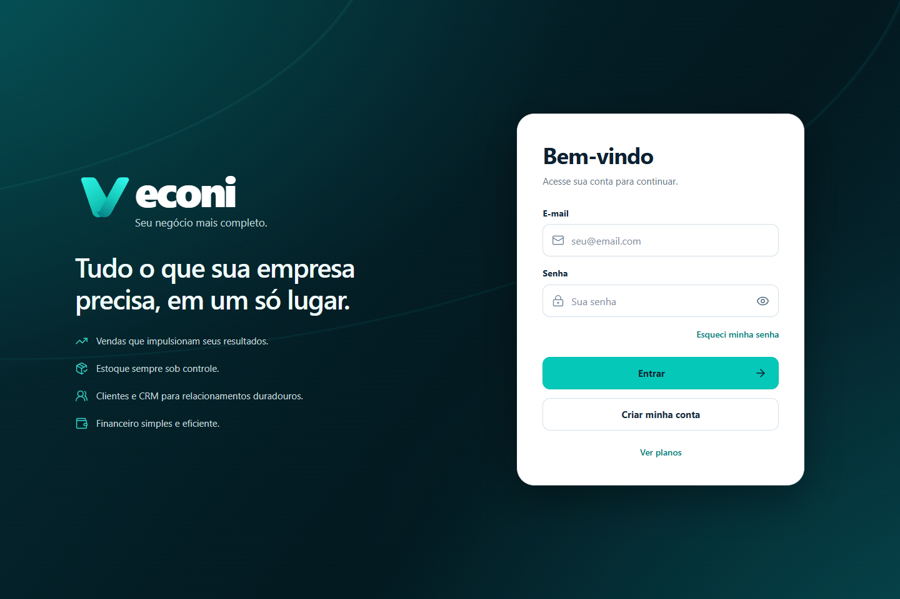
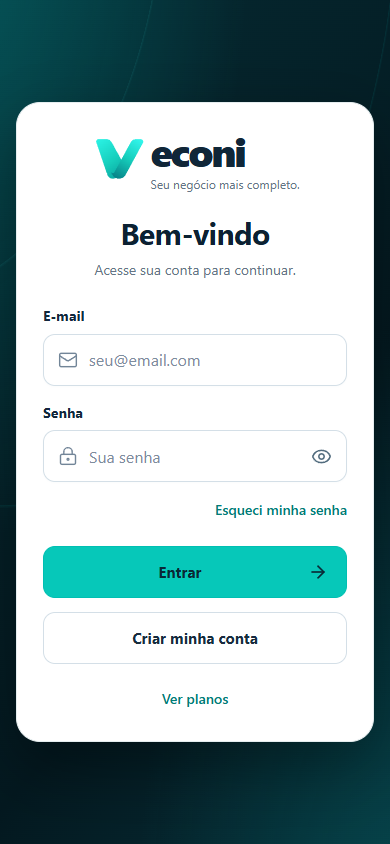
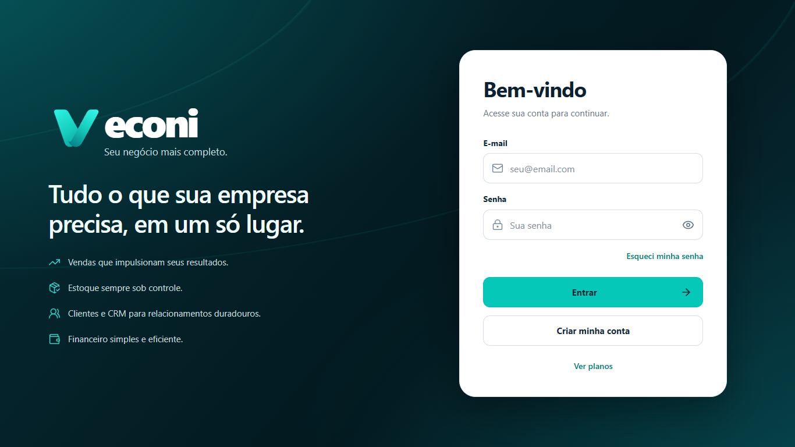
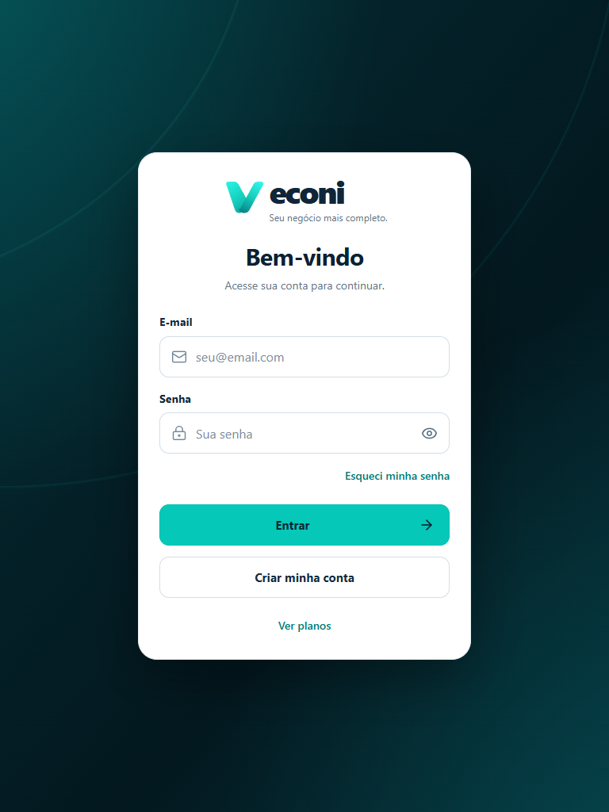
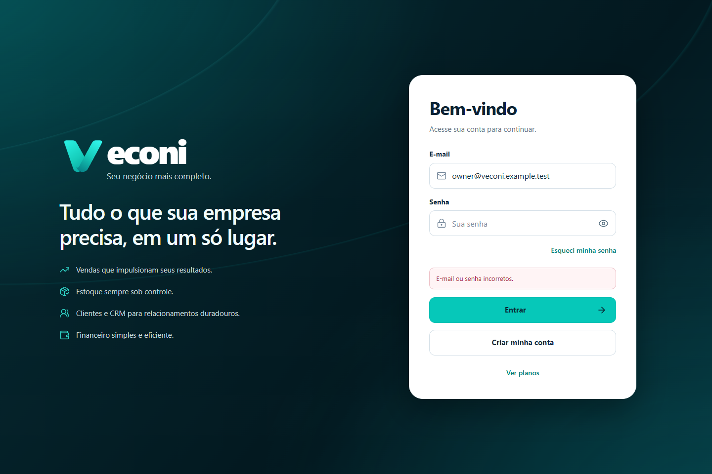
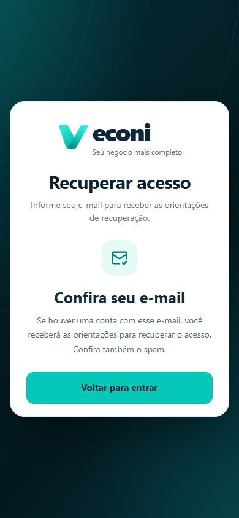
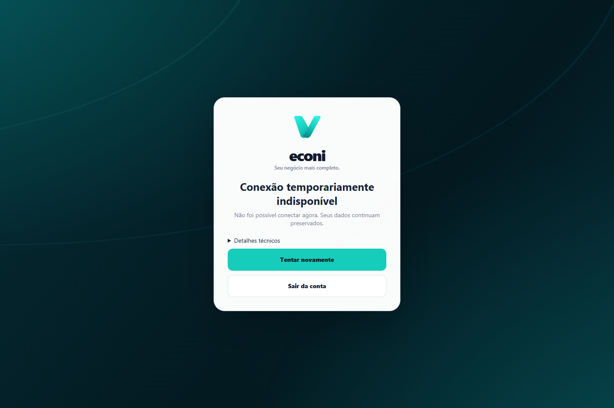
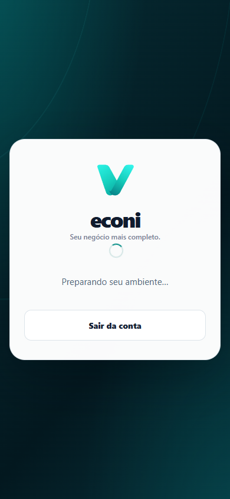

Seu negócio mais completo.
Capturas reais do HTML/CSS e do controlador de acesso integrado, em Chromium isolado. Sem imagens estáticas usadas como interface.
Nenhum deploy ou commit de release. Prévia visual sem acesso à rede. Autenticação validada separadamente no Firebase Auth Emulator com SDK 10.13.2.
Desktop e mobile




Tablet e notebook




Erro e recuperação




Carregamento e erro de preparação




Android/iOS físicos, barras e teclado reais não foram testados. Zoom foi validado por reflow equivalente; teclado por viewport reduzido.